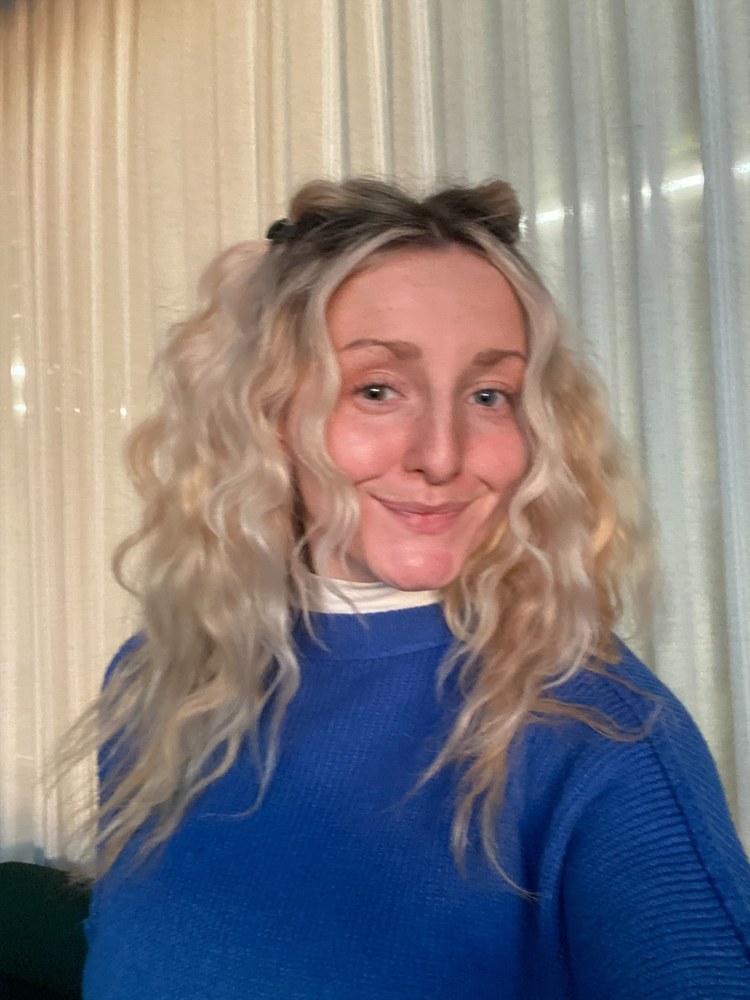

Salut! I'm Elle! A 23-year-old graphic design student at Utah Valley University (UVU), situated in the heart of Utah's mountains. Expected to graduate with a Bachelor of Fine Arts in Graphic Design in 2026, I am passionate about creating compelling visual narratives that resonate with diverse audiences. Being fluent in French has provided me with a unique cultural perspective, enriching my design approach and enabling me to communicate effectively with a broader audience. My journey in graphic design has been shaped by a commitment to combining aesthetic appeal with functional design, ensuring that each project not only looks exceptional but also serves its intended purpose. At UVU, I've had the opportunity to engage with both print and interactive design, utilizing the latest software and technologies to bring ideas to life. The program's emphasis on rigorous research and process development has honed my critical thinking and visual communication skills, preparing me for a dynamic career in the design industry. Beyond the classroom, I am eager to collaborate on projects that challenge me to think creatively and push the boundaries of traditional design. I believe that effective design is a powerful tool for storytelling and am dedicated to crafting visuals that leave a lasting impact. Feel free to explore my portfolio to see examples of my work, and don't hesitate to reach out if you're interested in collaborating or learning more about my design journey. Merci de votre visite!